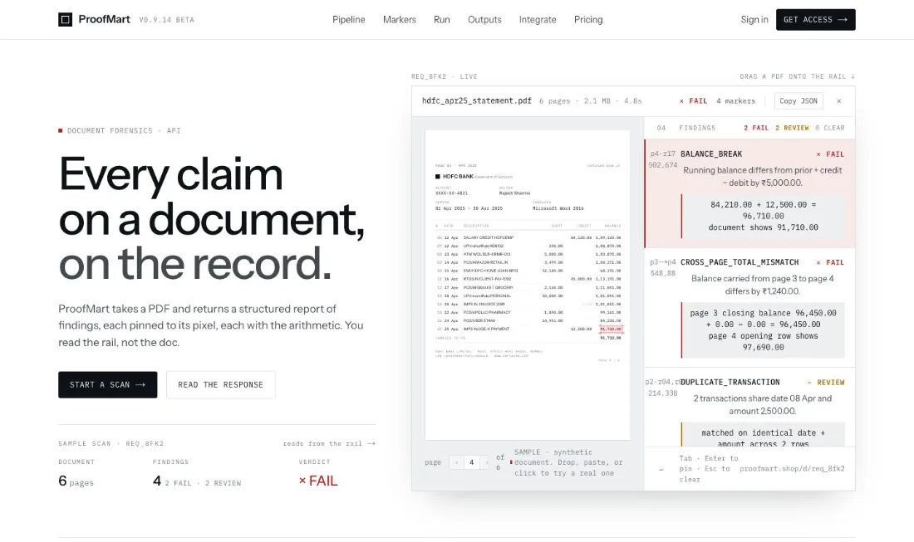
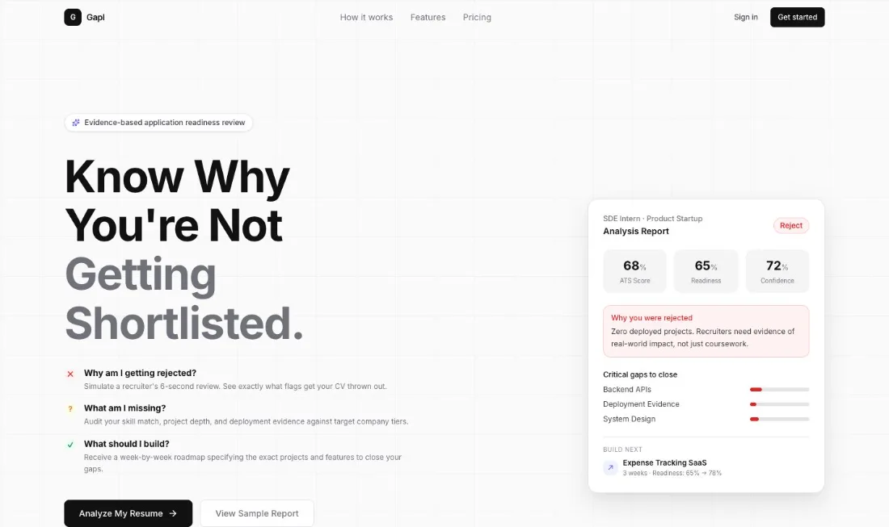
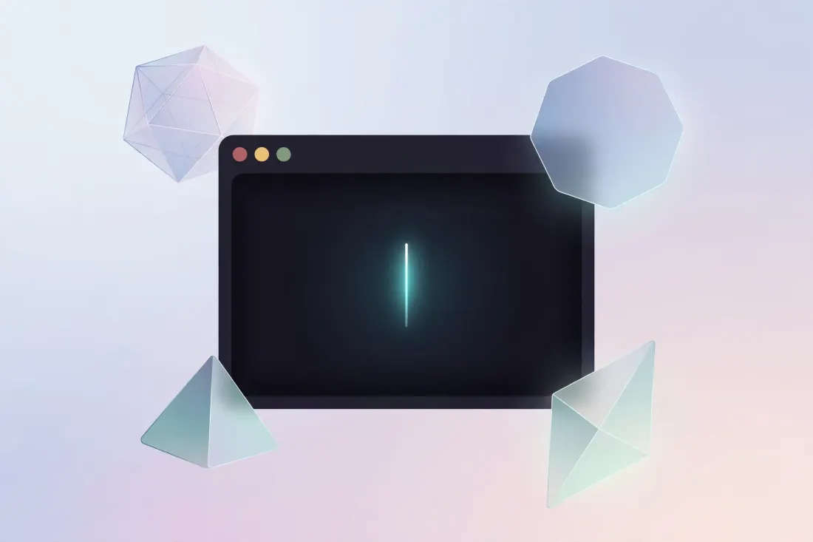
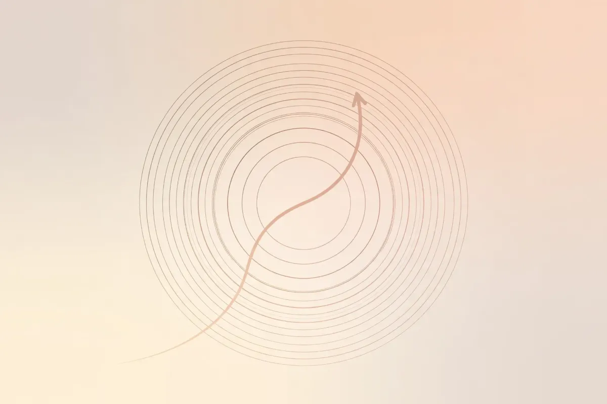
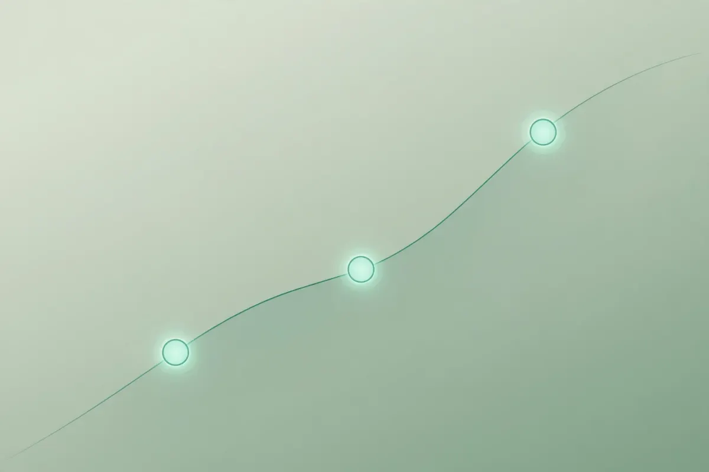
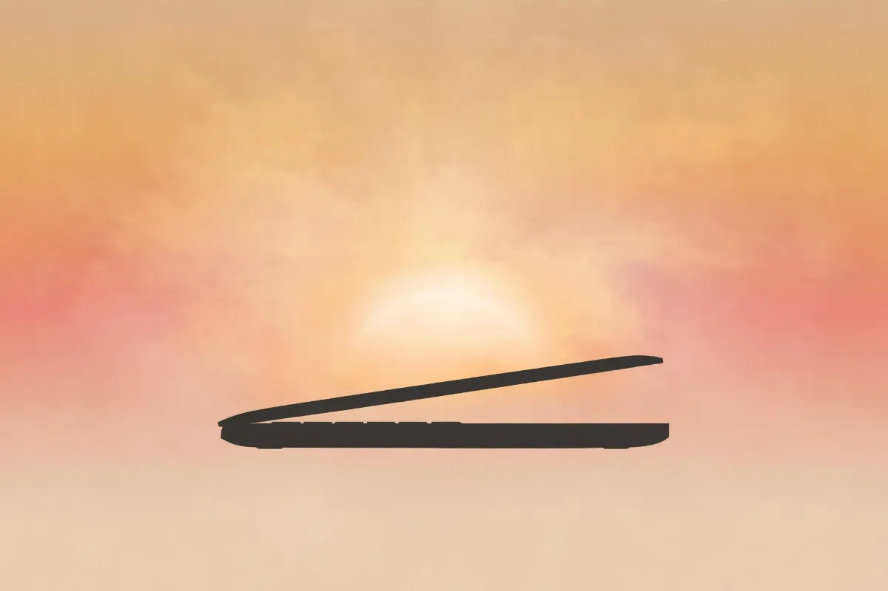

The campus GTM playbook I wish I had
What actually moves a campus: pools, timing, and measurement — not posters. The playbook behind PicaPool’s campus launches, with attribution wired in from day one.
Read on LinkedInFull-stack & AI engineer.
B.Tech CSE student at LPU who ships full-stack and AI products: a live document-forensics API, an application-readiness engine with a multi-provider AI gateway, and internal attribution tooling inside a live startup. Every project below links to its source — and to a running demo where one exists.
Interactive terminal — type help, or just ask a question about me (AI, powered by Groq)
01About
Most people pick a lane. I’m trying to understand the entire highway.
I’m a Computer Science student and builder working across AI, product, growth, and execution. I’ve spent my time in early-stage startups, where the fastest learning happens by being involved in everything.
At PicaPool, I work in the Founder’s Office, building AI systems, internal tools, analytics infrastructure, attribution systems, and automation. At UniLyf, I worked across product and growth, using user behaviour and retention data to shape product and launch decisions. I also build and ship products independently — including Gapl and ProofMart.
What I care about:
I like being close to both the problem and the implementation. Build. Measure. Learn. Iterate.
02Skills
Every skill below has a repository, a project, or a production deployment behind it. The icons are the real technology marks — nothing decorative.
03Projects
Each card states what the project is, the decision behind it, and its real status. Source links go to the real repositories, live links go to running deployments — and where there is no live demo, I say why.

Live · betaEdited bank statements and invoices pass a visual check. ProofMart is a document-forensics API: upload a PDF and get back a structured report of findings — each pinned to its place on the page, each with the arithmetic that proves it.
Technical decision: check the document’s own math instead of guessing at pixels — running balances, cross-page carry-forwards, duplicate transactions — so every flag is explainable. Tesseract OCR covers scanned pages; Next.js route handlers expose it all as an API.

Live · personal projectCandidates get rejected without ever learning why. Gapl simulates a recruiter’s screen of your resume against a target role and company tier — ATS fit, readiness, the exact gaps — then builds a week-by-week roadmap to close them.
Technical decision: every analysis goes through a fallback AI gateway (OpenAI → Gemini), so one provider’s outage never fails a scan. Email links are rewritten to a tracking subdomain by Next.js middleware for 30-day last-touch attribution.

Working · pre-releaseStudents lose the first week of every course to installing the wrong tools. College-CLI maps a course to exactly what it needs — npx college-cli lpu/cse-301 detects, plans, installs and verifies the setup on a fresh laptop.
Technical decision: courses are data, not code — a schema-validated registry fetched from GitHub, cached for 24 hours, with a bundled fallback for campus proxies. A version newer than the course allows is reported as a conflict, not a doomed install.
60,000 students on one campus, and meeting anyone outside your class still depends on luck. UniConnect is anonymous campus chat and video: random ten-minute matches, with identities revealed only when both people opt in.
Technical decision: privacy by mechanism — a mutual “Enjoy” unlocks friend requests before any name is shown. Socket.IO handles matching and chat, PeerJS/WebRTC carries peer-to-peer video, and every message is rate-limited and sanitised. Ships as an Android app via Capacitor.
04Certifications
Every credential below is listed on my LinkedIn. Hover or tap a card to preview the full credential.
Forage · Deloitte Australia
Forensic-style analytics on business datasets — cleaning, dashboarding, and insight write-ups.
iamneo · an NIIT venture
Systems-level fundamentals: memory, pointers, and data structures in C.
05Achievements
Every number here traces back to a campaign, a repository, a program, or a team. Nothing is borrowed.
06Open source
This section reads the GitHub API live — stats, language mix, and recent pushes; if the API is unreachable, tiles stay blank instead of showing stale numbers. syncing…
Loading contributions…
Loading languages…
Contributions come from GitHub’s own calendar (private work included, refreshed hourly); repos and languages from the GitHub API — never hard-coded.
All repositories07Experience
Current roles first, then past roles by most recent — what I owned and what it produced.
08Writing
Essays and build notes from my 30-day writing challenge — on growth, systems and the odd personal milestone.

What actually moves a campus: pools, timing, and measurement — not posters. The playbook behind PicaPool’s campus launches, with attribution wired in from day one.
Read on LinkedInTwo teams waiting on each other is a systems problem — here is how I debug it.
Read on LinkedIn
Cohorts, curves, and the questions I ask before trusting any dashboard.
Read on LinkedIn
Five years, two degrees of heat, one very patient machine. A goodbye.
Read on LinkedIn09Contact
I reply within a day — usually faster. Internships, freelance builds, open-source collabs, or just a good argument about attribution models.
deepanshu.lathar [at] gmail.comVerified credential
As listed on linkedin.com/in/deepanshulathar